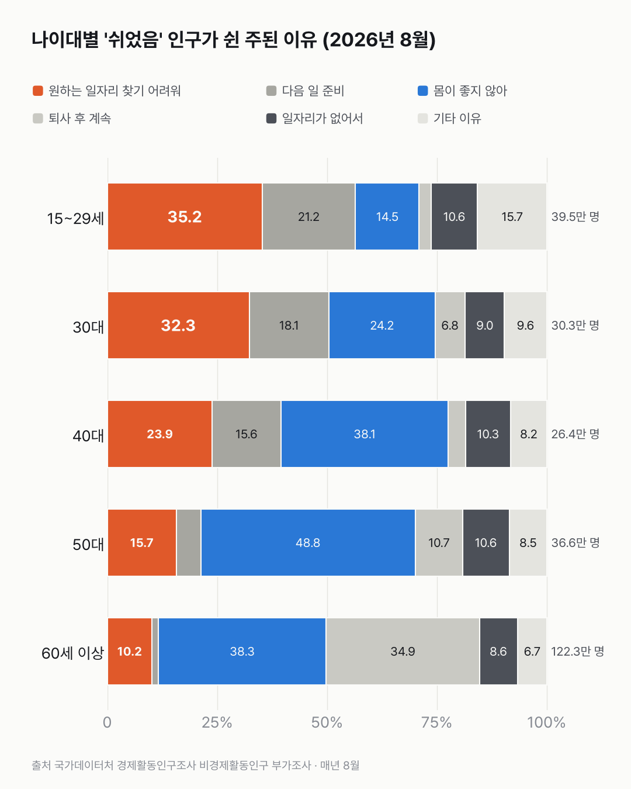
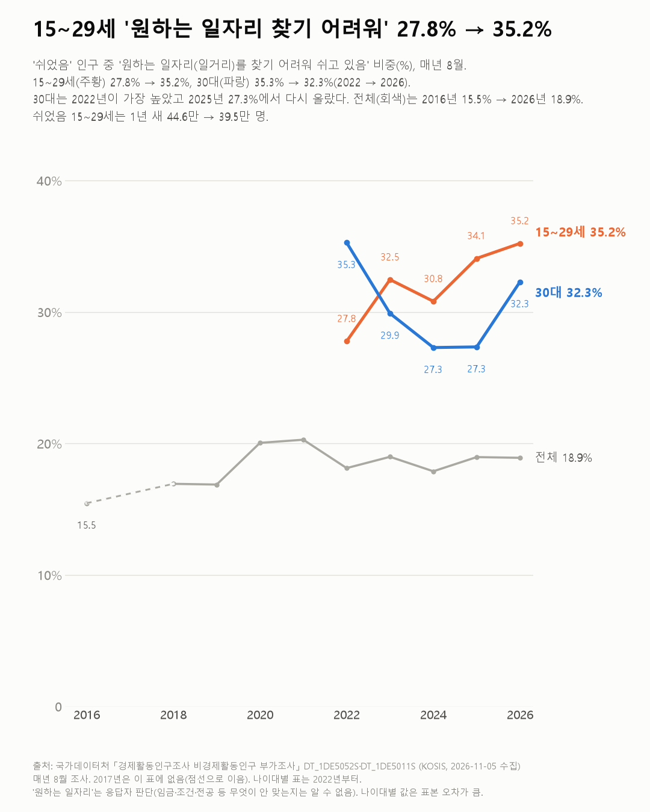

그냥 쉬는 청년, 셋 중 하나는 '원하는 일자리 찾기 어려워서'라고 해요
쉬는 이유는 나이에 따라 갈려요. 15~29세와 30대는 '원하는 일자리 찾기 어려워서'를, 40대부터는 건강을 가장 많이 꼽아요.

- 2026년 8월 일도 구직도 하지 않고 쉰 15~29세의 35.2%, 30대의 32.3%가 '원하는 일자리 찾기 어려워서'를 주된 이유로 꼽았어요.
- 40대부터는 '몸이 좋지 않아서'가 가장 많아요. 40대 38.1%, 50대 48.8%, 60세 이상 38.3%예요.
- 15~29세의 이 비율은 2022년 27.8%에서 35.2%로 올랐어요. 쉰 15~29세 전체는 1년 새 44.6만에서 39.5만 명으로 줄었어요.
그럼 일자리가 안 맞아 쉬는 청년이 늘어난 걸까요? 비율만 보면 그렇게 보였어요. 그런데 이 이유로 쉬는 15~29세는 13.9만 명으로, 1년 전 15.2만 명보다 적어요. 쉬는 15~29세 전체가 더 크게 줄면서 비율만 올라간 거예요.
30대는 조금 달라요. 2022년(35.3%)이 가장 높았고, 2024·2025년 27.3%로 내려갔다가 2026년 32.3%로 다시 올랐어요. 이 이유로 쉬는 30대는 9.0만에서 9.8만 명이 됐어요.

다른 이유도 나이 따라 갈려요. 15~29세에선 '다음 일 준비를 위해'가 21.2%로 두 번째예요. 30대 18.1%, 40대 15.6%, 50대 5.5%, 60세 이상 1.4%로, 나이가 들수록 줄어요. 40대(23.9%)부터는 '원하는 일자리'가 줄고 건강이 앞서요. 60세 이상은 '퇴사(정년퇴직) 후 계속'도 34.9%예요.
전체 쉬었음 인구로 넓혀 보면, '원하는 일자리' 비중은 2016년 15.5%에서 2026년 18.9%예요. 2020~2021년 20%대를 찍은 뒤 18~19%대에서 움직여요. 이 이유로 쉬는 사람을 모두 세면 48.3만 명이고, 그중 60세 이상이 12.5만 명으로 30대(9.8만 명)보다 많아요. 비율로 바꿔 보니 달랐어요. 30대는 쉬는 사람 셋 중 하나가 이 이유인데, 60세 이상은 건강과 퇴사 후 계속이 앞에 서요.
15~29세가 말하는 '원하는 일자리'가 월급인지, 하는 일인지, 사는 곳인지는 이 조사에 없었어요.
이 숫자는 어디서 왔나요
출처
어떻게 셌나요
- 국가데이터처 「경제활동인구조사」의 8월 비경제활동인구 부가조사예요. 일도 구직도 하지 않는 사람에게 따로 더 묻는 조사예요.
- 쉬었음은 일도 구직도 하지 않는 사람 가운데 육아·가사·학업·나이 같은 다른 이유 없이 '그냥 쉬었다'고 답한 사람이에요. 실업자와는 달라요.
- 이유는 '주된 이유' 하나만 골라요. 비율은 그 이유를 고른 사람을 그 나이대 쉬었음 인구로 나눈 값이에요.
- 8월 한 달 조사 값이라 연간 고용동향(월 평균)의 쉬었음 수와 달라요. 앞선 쉬었음 청년 글은 연간 평균을 썼어요.
- 표본이 작아 공표되지 않은 칸(예: 40대 이상 '기타')은 빈칸으로 두었어요.
한계 5가지
이 데이터로 말할 수 없는 것
- '원하는 일자리'는 응답자의 판단이에요. 임금·근무 조건·전공·지역 중 무엇이 안 맞는지는 이 표로 알 수 없어요.
- 주된 이유 하나만 고르므로 건강과 일자리 문제가 겹친 사람은 한쪽에만 잡혀요.
- 나이대별 값은 표본이 작아 1년 새 몇 %p 변화는 오차일 수 있어요(30대 27.3% → 32.3% 포함).
- 원인은 이 데이터로 알 수 없어요. 같은 조사의 취업 희망자는 취업 희망 월급 글에서 다뤘어요.
- 여러 조사를 묶어 '요즘 청년들, 정말 일을 안 하는 걸까?'를 본 글은 청년 일자리 종합 글이에요.
계산 기록
쓰기 전에 정한 것
- 나이대별 표가 2022년부터만 있고 2017년 값이 없는 것을 데이터를 받기 전에 확인했어요. 그래서 나이대 비교는 2022~2026년으로 정했어요.
- 8월 한 달 값이라 연간 평균을 쓴 앞선 글과 숫자가 다르다는 걸 적기로 했어요.
- 나이대별 표본이 작으니 작은 변화는 오차일 수 있다고 적기로 했어요.
처음 던진 질문
일도 안 하고 일자리도 안 찾으면서 '그냥 쉬었다'고 답한 사람들이 있어요. 왜 쉬는지 11월 4일 나온 2026년 8월 조사를 열어 봤어요. 나이대별 이유와, '원하는 일자리 찾기 어려워서'가 몇 년 새 어떻게 변했는지 봤어요.
수집·검증 기록
- 표: KOSIS DT_1DE5052S(나이대별, 2022~2026), DT_1DE5011S(전체, 2016~2026, 2017년 없음). 수집일 2026-11-05 (KOSIS 오픈API). 단위 천 명.
- 계산: 이유 비율 = 그 이유 ÷ 그 나이대 쉬었음 인구.
- 교차 확인: 2026년 쉬었음 255.1만 명(1년 새 -8.9만 명), 전체 이유 1위 '몸이 좋지 않아' 34.4%, '퇴사 후 계속' 19.9%, '원하는 일자리 찾기 어려워' 15~29세 35.2%·30대 32.3%(2025년 27.3%)는 2026-11-04 보도와 같음.
새 글 나오면 받아 보기
피드 리더 앱에 이 사이트 주소를 한 번 넣어 두면, 새 글이 올라올 때 앱에 떠요. 가입이나 메일 주소는 필요 없어요.
받는 법 보기
- 피드 리더 앱을 하나 골라요. 새 글을 모아 보여 주는 앱이에요. 예를 들면 Feedly나 Inoreader가 있어요. 둘 다 무료고 웹·휴대폰에서 써요.
- 앱에서 '구독 추가'(+)를 누르고 아래 주소를 붙여 넣어요.
- 끝이에요. 새 글이 올라오면 앱 목록에 떠요.
https://protofu.github.io/opendata-insight/feed.xmlFeedly를 쓴다면 여기를 눌러 바로 추가할 수도 있어요.